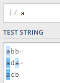
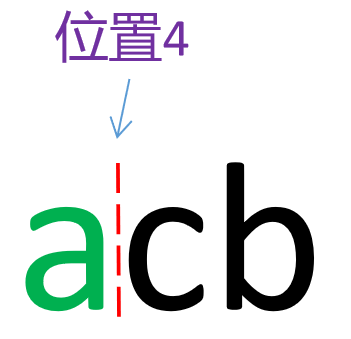
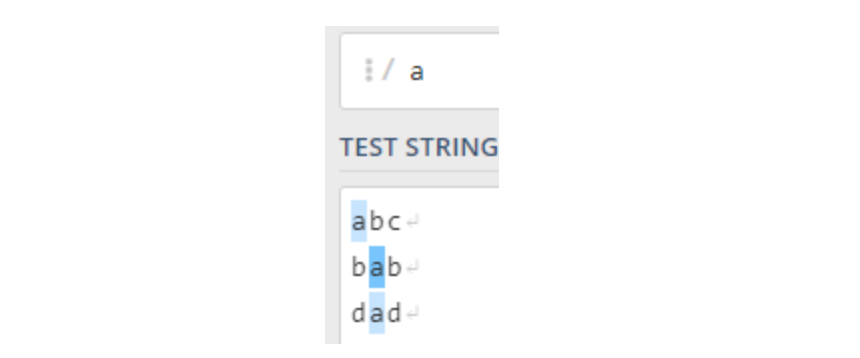
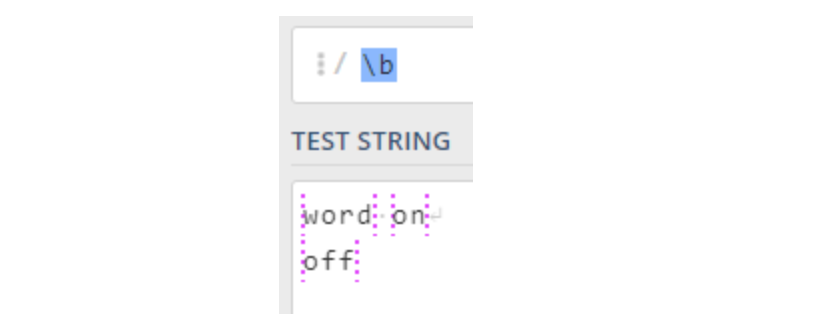

正则表达式-环视
环视基础
环视只进行子表达式的匹配，不占有字符，匹配到的内容不保存到最终的匹配结果，是零宽度的。环视匹配的最终结果就是一个位置。
环视的作用相当于对所在位置加了一个附加条件，只有满足这个条件，环视子表达式才能匹配成功。

对于字符串”abc”，正则表达式可以匹配的元素有三个字符与四个位置，分别是字符“a”,“b”,“c”与位置0,1,2,3。正则中类似a，\d，\w，.，*之类的，都是用来匹配的字符的，而环视是用来匹配位置的。
环视按照方向划分有顺序和逆序两种，按照是否匹配有肯定和否定两种，组合起来就有四种环视。顺序环视相当于在当前位置右侧附加一个条件，而逆序环视相当于在当前位置左侧附加一个条件。
| 表达式 | 说明 |
|---|---|
| (?=Expression) | 顺序肯定环视，表示所在位置右侧能够匹配Expression |
| (?!Expression) | 顺序否定环视，表示所在位置右侧不能匹配Expression |
| (?<=Expression) | 逆序肯定环视，表示所在位置左侧能够匹配Expression |
| (?<!Expression) | 逆序否定环视，表示所在位置左侧不能匹配Expression |
所谓顺序、逆序，说的其实就是对此位置的左侧还是右侧进行约束。因为正则表达式的匹配顺序是从左至右的，所以顺序环视就是对匹配位置的右侧进行约束，逆序环视就是对匹配位置的左侧进行约束。肯定说的是需要此位置的左侧或者右侧是什么，否定说的是需要此位置的左侧或者右侧不是什么。
对于环视的叫法，有的文档里叫预搜索，有的叫什么什么断言的，这里使用了更多人容易接受的《精通正则表达式》中“环视”的叫法，其实叫什么无所谓，只要知道是什么作用就是了，就这么几个语法规则， 还是很容易记的。
顺序肯定环视
顺序肯定环视的表达式为(?=expression)，要求位置右侧要符合expression，这个位置才能成功匹配整个的环视表达式。(?=b)即要求匹配位置的右侧为b。对于字符串abb，共有四个位置可供匹配。
(?=b)的简要匹配过程如下：
- (?=b)先去尝试匹配位置0，发现位置0的右侧是a，不是b，不符合(?=b)；
- 字符a不是位置，不进行匹配；
- (?=b)尝试匹配位置1，位置1的右侧是b，符合(?=b)，保存匹配结果；
- 字符b不是位置，不进行匹配；
- (?=b)尝试匹配位置2，位置2的右侧是b，符合(?=b)，保存匹配结果；
- 字符b不是位置，不进行匹配；
- (?=b)尝试匹配位置3，位置3的右侧没有字符，不是b，不符合(?=b)。
最终匹配结果，只有位置1与位置2匹配成功，如下图所示。
环视单独使用作用不明显，因为它是零宽度的，不占有字符，匹配成功也不会返回字符。环视与字符配合使用，才能发挥它的最大威力。
要求匹配字符a，并且a的右侧必须是b。相应的正则表达式为a(?=b)。准备匹配的字符串为abb、ada、acb。
正则表达式a匹配，abb、ada、acb中的所有a都会被匹配到，如下图。

当正则表达式改为a(?=b)，就只有一个a符合要求。
下面解释一下a(?=b)。为了方便理解，将正则表达式a(?=b)的匹配分为两步。
先用a去匹配字符串中的a，这时会有4个字符符合要求。分别是abb中的a，ada中两个a，acb中的a。表达式中(?=b)用来匹配位置，因为(?=b)在表达式a(?=b)中位于a的右侧，意味着它对匹配到的a的右侧位置提出了要求。如下图所示，有四个位置需要匹配。


(?=b)是顺序肯定环视，即需要匹配的位置的右侧是表达式b。用(?=b)去匹配位置1，位置1的右侧是字符b，符合要求，所以位置1符合要求。用(?=b)匹配位置2，位置2的右侧是字符d，所以位置2不符合要求。用(?=b)匹配位置3，位置3的右侧是换行符或是没有字符(这取决于ada是不是字符串结尾)，不符合(?=b)。位置4也不符合(?=b)。最终只有abb中的a符合整体正则表达式a(?=b)。
匹配过程不是上文说的那样，上述说法只是为了方便理解。实际上，正则引擎会先用正则表达式a(?=b)中最左侧的字符a去尝试匹配到abb中的第一个a，匹配成功，再用(?=b)去匹配a右侧的位置，符合要求，所以abb中的a符合正则表达式a(?=b)的整体要求，匹配成功。然后正则引擎会用a去尝试匹配abb中的第一个b，不符合要求，舍弃，继续用a尝试匹配abb中的第二个b，仍然不符合要求。正则引擎继续用正则表达式中的a匹配ada中的第一个a，符合要求，再用(?=b)尝试匹配此a的右侧位置，此位置的右侧不是b，不符合要求。ada中的第一个a不符合正则表达式a(?=b)的整体要求，舍弃，继续向右匹配，直到所有的字符都被匹配一遍。
需要注意的是，正则表达式a(?=b)最终匹配的是abb中的a，而不是abb中的ab，时刻牢记，环视匹配的是位置，不占有字符，所以也被称为零宽断言。
顺序否定环视
顺序否定环视的表达式为(?!expression)，要求匹配的位置右侧不能是expression。(?!b)即要求匹配位置的右侧不能是b。
正则表达式a匹配，abb、ada、acb中的所有a都会被匹配到，如下图。
当正则表达式改为a(?!b)，则abb中的a会不符合正则表达式。
匹配过程简述如下：
- 正则引擎先尝试用a匹配abb中的a，符合要求；
- 引擎继续用(?!b)匹配a的右侧位置，要求此位置的右侧不能是b，匹配后发现位置不符合此要求，则abb中的字符a不符合整个正则表达式a(?!b)；
- 正则引擎舍弃abb中的a，继续向右匹配；
- 匹配到ada中的第一个a，符合正则表达式中的a；
- 正则引擎继续用(?!b)匹配a的右侧位置，要求此位置的右侧不能是b，符合要求，所以ada中的第一个a符合正则表达式a(?!b)的整体要求，匹配成功；
- 剩下的两个a也是同样是匹配过程。
就上面的问题而言，使用a[^b]同样可以只匹配到ada、acb中的a，而不去匹配abb中的a。但是这样有两个问题，一是a[^b]不只是匹配了a一个字符，实际匹配到了a与a后面的字符；二是若是想要匹配abb、abd、ab中的a，并且排除abc中的a，上述正则表达式就会失效。这时环视就显示出优势了，通过a(?!bc)就可以区分。
所以，环视在针对表达式进行匹配时，会很方便。
逆序肯定环视
逆序肯定环视的表达式为(?<=expression)，要求匹配位置的左侧必须是expression，例如(?<=b)即要求匹配位置的左侧必须是b。
正则表达式a匹配，abc、bab、dad中的所有a都会被匹配到，如下图。
当正则表达式改为(?<=b)a，则只有bab中的a符合正则表达式。
匹配过程简述如下：
- 表达式(?<=b)a会先用(?<=b)对字符串abc中的位置0进行匹配，也就是abc中a的左侧位置，此位置的左侧无字符，自然也不是b，不符合(?<=b)；
- 继续使用(?<=b)匹配abc中的位置1，也就是b的左侧位置，此位置左侧为a，不符合(?<=b)；
- 继续向左匹配，直到匹配到bab中的位置1，也就是a的左侧位置，位置1的左侧为b，符合(?<=b)；
- 然后用正则表达式(?<=b)a中的a继续进行匹配，因为a位于(?<=b)的右侧，所以用a去匹配bab中位置1的右侧字符，匹配成功；
- 至此，bab中的位置1与位置1右侧的字符a对表达式(?<=b)a全部匹配成功，将匹配结果保存；
- 正则表达式继续向左匹配，直到全部匹配结束。
可以看到，对正则表达式进行匹配时，也是先对表达式中的左侧元素匹配，成功后才会匹配表达式中的下一个元素。
逆序否定环视
逆序否定环视的表达式为(?<!expression)，要求匹配位置的左侧不是expression，例如(?<!b)即要求匹配位置的左侧不能是b。正则表达式a匹配，abc、bab、dad中的所有a都会被匹配到，如下图。当正则表达式改为(?<!b)a，则只有abc、dad中的a符合正则表达式。
匹配过程简述如下：
- 表达式(?<!b)a首先用(?<!b)去尝试匹配abc中的位置0，也就是abc中的a的左侧位置，位置0的左边无字符，自然也不是字符b，符合(?<!b)；
- 然后用(?<!b)a中的a继续匹配，因为表达式中a在(?<!b)的右侧，所以会尝试匹配位置0的右侧字符，匹配成功；
- abc中的位置0与位置0右侧的字符a对整个正则表达式(?<!b)a匹配成功；
- 表达式(?<!b)a用(?<!b)去继续尝试匹配abc中的位置1，匹配成功；
- 正则中的a继续匹配位置1的右侧字符，匹配失败，
- abc中的位置1与位置1右侧的字符b对整个正则表达式(?<!b)a匹配失败；
- 正则表达式(?<!b)a继续向左匹配，直到所有的位置与字符都匹配完毕。
其他环视
既然是对位置的匹配，那么\b，^，$也可以视为环视。\b匹配单词边界或是字符串的起始或结束，要求是此位置的前后，分别是单词字符和不是单词字符，等价于(?<!\w)(?=\w)|(?<=\w)(?!\w)，但是不等价于(?<=\W)(?=\w)|(?<=\w)(?=\W)。同样的，^也是匹配一个位置，要求是此位置左侧非字符，右侧任意字符，等价于(?<![\w\W])(?=[\w\W])。$匹配一个位置，要求是此位置左侧任意字符，右侧非字符，等价于(?<=[\w\W])(?![\w\W])。
\b匹配单词边界或是字符串的起始或结束，如下图所示，\b匹配了word单词前后，on单词前后，off单词前后共6个位置。

(?<!\w)(?=\w)|(?<=\w)(?!\w)匹配同样的内容，结果如下所示，匹配结果与\b一致。

(?<=\W)(?=\w)|(?<=\w)(?=\W)匹配同样的内容，结果如下所示。
可以看到，字符串内的单词间隔都可以正确匹配，问题出在字符串的起始与结束。表达式的本意是通过(?<=\W)(?=\w)匹配单词与字符串的起始位置，(?<=\w)(?=\W)匹配单词与字符串的终止位置。
但(?<=\W)(?=\w)要求匹配的位置，左侧是非单词字符，但其中隐含要求左侧需要有字符，然后右侧为单词字符。但是对于字符串起始位置，左侧是没有字符的，自然也就就无法匹配(?<=\W)，所以字符串起始位置匹配失败。字符串终止位置是同样的问题。
参考链接
正则大神主页：https://blog.csdn.net/lxcnn?t=1
正则表达式入门教程：https://deerchao.cn/tutorials/regex/regex.htm#top